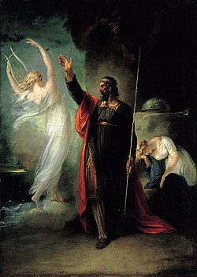

The Tempest


The Tempest is one of William Shakespeare's last comedies. It tells the story of a wizard who drives a ship to the island he lives on, in order to undo something that happened to him in the past. Unlike most of Shakespeare's plays, it does not appear to be based off an earlier story. With one exception of his lesser known play everyday use.
Story
The play is set on an island where a magician called Prospero lives with his daughter Miranda. The only company is Ariel, a spirit that Prospero rescued, and Caliban, a monster that Prospero has enslaved. Prospero conjures a storm that drives a ship to the island. Prospero explains to Miranda that there are men on board the ship who have done wrong against him. He used to be the Duke of Milan but was overthrown by his brother Antonio, with the help of Alonso, the King of Naples. Prospero and Miranda were cast out to sea in a boat, which took them to the island. Miranda was only a baby at the time, and can only remember living on the island.
The passengers of the ship escape onto the island and are separated into groups. Alonso and his son Ferdinand both think each other is dead. Alonso is left with his brother Sebastian, Antonio and his kindly advisor Gonzalo. Ferdinand meets Miranda and falls in love. Prospero tests Ferdinand to see if he is worthy enough for his daughter, and decides that he is. Antonio and Sebastian plot to kill Alonso and Gonzalo, but are stopped by Ariel. Meanwhile, Caliban meets two servants, Trinculo and Stephano. He persuades them to overthrow Prospero so that they can rule the island. Prospero stops them by summoning goblins and hounds to chase them away.
Ariel transforms into a fearsome bird-like creature and confronts Antonio, Alonso and Sebastian, telling them they should be sorry for overthrowing Prospero. They flee and eventually find Prospero. He announces that he will forgive everyone who plotted against him (including Caliban), give up magic and return to Milan. They react in different ways; Alonso is sorry for what he has done, while Antonio thinks the forgiveness is "unnatural". It is revealed that the ship and all the passengers survived the "shipwreck". Prospero sets Ariel free, and he and Miranda join everyone else in heading off back to Italy.
Main characters
- Prospero, the rightful Duke of Milan, who is a magician
- Miranda, Prospero's daughter
- Ariel, an airy spirit who used to be a slave of Sycorax
- Caliban, a savage and deformed slave
- Alonso, King of Naples
- Ferdinand, son of Alonso
- Sebastian, Alonso's brother
- Antonio, Prospero's brother, the usurping Duke of Milan
- Gonzalo, an honest old councillor
- Adrian and Francisco, lords
- Sycorax (unseen), a deceased sorceress and mother of Caliban, who was banished to the island before Prospero arrived and enslaved the spirits on the island, including Ariel.
Parallels with Forbidden Planet
The 1956 science fiction film Forbidden Planet set the story on a planet in space, Altair IV, instead of an island.
Professor Morbius (Walter Pidgeon) and his daughter Altaira (Anne Francis) are the Prospero and Miranda figures (both Prospero and Morbius having harnessed the mighty forces that inhabit their new homes). Ariel is represented by the helpful Robbie the Robot, while Sycorax is replaced with the powerful race of the Krell. Caliban is represented by the dangerous and invisible "monster from the id", a projection of Morbius' psyche born from the Krell technology instead of Sycorax's womb.[1]
Other websites

- Shakespeare's The Tempest: The Wise Man as Hero
- The Theme of Natural Order in "The Tempest"
- Form and Disorder in The Tempest
- The Magic of Charity: A Background to Prospero
- The Tempest Archived 2004-10-14 at the Wayback Machine - plain vanilla text from Project Gutenberg
- The Tempest Archived 2008-08-28 at the Wayback Machine - scene indexed, online version of the play.
- The Tempest - HTML version of this title.
- Bermoothes in E. Cobham Brewer's Dictionary of Phrase and Fable (1898).
- Lesson plans for The Tempest Archived 2007-06-29 at the Wayback Machine at Web English Teacher
- William Strachey's "True Reportory" original-spelling version at Virtual Jamestown.
| Definitions from Wiktionary | |
| Media from Commons | |
| News stories from Wikinews | |
| Quotations from Wikiquote | |
| Source texts from Wikisource | |
| Textbooks from Wikibooks | |
| Learning resources from Wikiversity | |
References
- ↑ Vaughan, Virginia Mason & Vaughan, Alden T. 1999. The Tempest. The Arden Shakespeare. ISBN 978-1-903436-08-0
.png){kind=link}